Capítulo 13 Funciones de varias variables
Las funciones que hemos estudiado hasta ahora toman como entrada un número real y dan como salida un número real. La forma de representar este hecho es \[f:{\rm I\!R} \to {\rm I\!R}.\]
Las hemos llamado simplemente “funciones”, pero si queremos ser más precisos deberíamos llamarlas “funciones reales de variable real”. Pero en ciencia e ingeniería a menudo nos encontramos que la salida no es un número, sino un vector. Esto es el caso si la salida fuese un campo eléctrico, o una fuerza, que tienen magnitud y sentido. En este caso, tendríamos un numero real de entrada y un vector de \(n\) componentes de salida. Lo representamos como \[f:{\rm I\!R} \to {\rm I\!R}^n.\]
Una función de estas características la llamamos una “función vectorial de variable real”.
Hablar de números y vectores puede dar lugar a ambigüedades. Por ejemplo, cada componente de un vector es un número. Por eso, cuando hay vectores presentes y posibles ambigüedades, a un vector de una única posición (lo que hasta ahora hemos designado como “número”), se le da el nombre de escalar.
Podriamos tener otro caso: necesitar varios números de entrada para obtener un único número de salida. Este caso se nos da, por ejemplo, si queremos describir la temperatura en una superficie. Necesitamos dos valores de entrada, las dos componentes necesarias para designar el punto de la superficie, y obtenemos un único valor de salida, la temperatura. Esto se representa como \[f:{\rm I\!R}^m \to {\rm I\!R}.\]
A esto se le llama una “función real multivariable”.
Finalmente, podemos tener una función con \(m\) variables de entrada y que produce un vector de \(n\) componentes de salida. Un ejemplo sería el viento que hay sobre una superficie, por ejemplo en un campo de regatas. Esto se representa como \[f:{\rm I\!R}^m \to {\rm I\!R^n},\] y se le llama una “función vectorial multivariable”.
El análisis de una función de varias variables es, como era de esperar, más compleja que el de una variable. En esta introducción vamos a mostrar cómo se extienden los conceptos y operaciones que hemos visto en las funciones reales de una variable: límites, continuidad, derivadas, integrales.
13.1 Funciones vectoriales de variable real
Supongamos que tenemos un joven que va conduciendo un coche. Por un lado nos interesa la veocidad a la que va el coche en cada instante. Y por otro nos interesa el diámetro de las pupilas del conductor en cada instante de tiempo. Esto lo podemos representar como dos funciones reales de una variable real: \(v(t)\) y \(d(t)\). Son dos funciones independientes y sabemos analizar cada función: podemos determinar si es continua o no, calcular (si existe) el límite en cualquier punto, derivar, integrar…
Como la variable de entrada es la misma, lo podemos combinar en un vector, que llamaremos \(\vec{y}(t)\), con la velocidad como primera componente y con el diámetro de la pupila de segundo: \(\vec{y}(t) = (v(t), d(t)).\) Quizá lo hacemos porque nos simplifica la programación de cálculos y gráficas en el ordenador o por el motivo que sea. Lo que parece obvio, es que por el hecho de “empaquetar” las dos funciones en una, la continuidad, derivabilidad, etc de cada función por separado no cambia: si en \(t = 12\) la derivada de \(v(t)\) es 2, no por haberlo empaquetado en un vector va a pasar a ser 3. Y lo mismo con la dilatación de las pupilas.
Nuestra lógica nos dice que todas las cuestiones de la función vectorial se pueden obtener mirando cada componente por separado. Entonces \[\lim_{t \to a} \vec{y}(t) = (\lim_{t \to a}v(t), \lim_{t \to a}d(t)),\] y \[\vec{y}^\prime(t) = \left(v^\prime (t), d^\prime (t)\right),\] y también \[\int \vec{y}(t) dt = \left(\int v(t) dt, \int d(t) dt\right).\]
Y con el mismo razonamiento podemos deducir que la función \(\vec{y}(t)\) es continua en \(t = a\) si ambas funciones \(v(t)\) y \(d(t)\) son continuas en \(t = a\), etc.
En este ejemplo se han escogido dos funciones, \(v(t)\) y \(d(t)\), que parecen no tener nada que ver una con otra. Pero si escogemos, por ejemplo, una fuerza en un espacio tridimensional, \(\vec{F} = (F_x, F_y, F_z)\), sabemos que podemos escribir ecuaciones de cada componente por separado. Es decir, estamos en el mismo caso. Luego si tenemos una viga que podemos considerar unidimensional, y la fuerza que se ejerce en cada punto de la viga es \(\vec{F}(x)\), analizar esta función va a consistir en analizar por separado cada función \(F_x(x)\), \(F_y(x)\) y \(F_z(x)\).
En resumen, analizar las funciones vectoriales de una variable real es más largo que si es una función real de variable real, pues hay que repetir el análisis para cada componete por separado. Pero no son más complicadas pues no hay cálculos ni conceptos nuevos. Desgraciadamente, no se puede decir lo mismo de las funciones reales multivariable.
13.2 Funciones reales multivariable
Hemos visto el caso de función más simple: un número de entrada, un número de salida. Pero en general, para saber algo necesitamos más de un número. Un caso simple es el volumen de una caja, que depende del alto, ancho y alto. O tenemos la Ley de Coulomb: \[F(q, q^\prime, r) = \frac{1}{4π\varepsilon_0}\frac{q\,q^\prime}{r^2}\] que vemos que depende de tres valores: las dos cargas y la distancia entre ellas.
Una función real de \(n\) variables reales es una función que toma \(n\) números y produce un número: \[f:{\rm I\!R}^n \to {\rm I\!R}.\] A las \(n\) variables de entrada se le llaman variables independientes y a la variable de salida se le llama variable dependiente.
Una gran ventaja de las funciones de una variable es que tienen una gráfica fácil de dibujar, lo que permite “ver” la función, lo que suele ser una gran ayuda en su análisis. Una función de dos variables se puede representar gráficamente, aunque, debido a la perspectiva, ya no se ve tan bien: 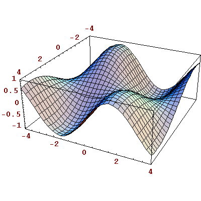
Una alternativa a la representación en perspectiva es el uso de curvas de nivel: 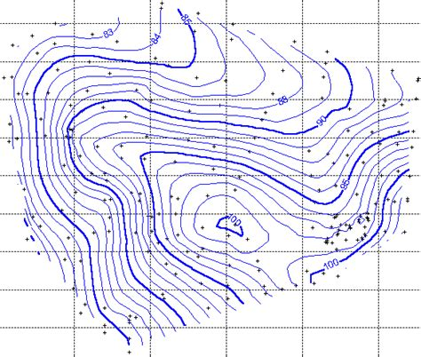
Ambas representaciones tienen sus ventajas e inconvenientes.
Si la función es de más de dos variables, ya no tenemos ninguna forma de representar su gráfica. Por eso, el análisis de las funciones multivariable es simbólico y formal y menos intuitivo que el de una variable. Es una dificultad con el que hay que aprender a trabajar
13.2.1 Funciones polinómicas y racionales multivariables
Los polinomios y funciones racionales son funciones de una varaible que aparecen mucho. No es obvio cómo se extiende estos tipos de funciones al caso multivariable.
Empecemos con las funciones polinómicas. Vamos a suponer primero que tenemos dos variables independientes, \(x\) e \(y\). Un ejemplo de función polinómica de dos variables sería \[f(x,y) = 3 x + 2y^2 - 3xy^3 - 5.\] Tenemos varios términos y cada uno de ellos o es una constante o aparecen \(x\) o \(y\) o ambos, cada uno elevado a un entero.
Podemos generalizar esto a \(n\) variables: una función polinómica \(f(x_1, x_2, …,x_n)\) es una función que está formada por una suma de términos donde cada uno de estos términos es de la forma \(kx_1^{m_1}x_2^{m_2}…x_n^{m_n}\), siendo \(m_1, m_2, … m_n\) enteros mayores o iguales a 0.
Una vez definidas las funciones polinómicas, es fácil defiinir las racionales: una función racional es un cociente de dos funciones polinómicas. Un ejemplo sería \[f(x_1, x_2, x_3, x_4) = \frac{3 + x_1x_3^2 + x_4}{x_2 + 5x_1x_3x_4^3}\]
13.2.2 Límites
Habíamos definido límite de una función, \(\lim_{x \to a}f(x)\), como el valor al que tendía la función \(f(x)\) cuando \(x\) tendía a \(a\). Esta idea informal se sigue manteniendo cuando tenemos varias variables, pero ahora la formalización de esta idea es más complicada
En el caso de una variable, veíamos que \(x\) podía tender a \(a\) de dos maneras: desde valores inferiores (desde la izquierda) o desde valores superiores (desde la derecha). Sólo si ambos límites existían y coincidían decíamos que la función tenía límite en \(x = a\).
Vamos a ver el caso de dos variables, \(f(x_1, x_2)\). Ahora el punto al que tiende no es un número, \(x \to a\), sino dos, \((x_1, x_2) \to (a_1, a_2)\). El problema es que ahora nos podemos aproximar a \((a_1, a_2)\) de infinitas maneras: desde la izquierda, desde la derecha, desde arriba, desde abajo, desde una diagonal, … y no solamente nos podemos acercar en línea recta: nos podemos acercar con cualquier curva, por ejemplo con una espiral. Diremos que existe el límite \(\lim_{(x_1, x_2) \to (a_1, a_2)} f(x_1, x_2)\) si los valores de los límites por todos estos infinitos caminos existen y son iguales.
Demostrar la existencia de un límite se ha convertido en algo mucho más complicado, pero no hace falta asustarse: casi siempre es lo que nos podríamos suponer.
Ejemplo 13.2 Sea \[f(x_1, x_2, x_3) = \frac{x_1 - x_2^2}{1 - x_3}.\]
Esta función tiene limite en todos los puntos en los que \(x_3 ≠ 1\).
Calculemos algunos valores: \[l\im_{(x_1, x_2, x_3) \to (1, 2, -3)}f(x_1, x_2, x_3) = \frac{1 - 2^2}{1 - (-3)} = \frac{-3}{4}\]
\[\lim_{(x_1, x_2, x_3) \to (0,0,0)}f(x_1, x_2, x_3) = \frac{0 - 0^2}{1 - 0} = 0\]
\[\lim_{(x_1, x_2, x_3) \to (2,1,1)}f(x_1, x_2, x_3) = \frac{2 - 1^2}{1 - 1} = \infty\]
También podemos tener indeterminaciones: \[\lim_{(x_1, x_2, x_3) \to (4,2,1)}f(x_1, x_2, x_3) = \frac{4 - 2^2}{1 - 1} = \frac{0}{0}\] No entraremos en como se resuelven las indeterminaciones.13.2.3 Continuidad
En el caso de una variable decíamos que una función \(f(x)\) era continua en \(x = a\) si \(\lim_{x \to a} = f(a)\). Esta misma idea la podemos trasladar al caso de varias variables. Una función \(f(x_1, x_2, …, x_n)\) es continua en el punto \((a_1, a_2, …, a_n)\) si \(\lim_{(x_1, x_2, …, x_n) \to (a_1, a_2, …, a_n)} =f(a_1, a_2, …, a_n)\).
No entraremos en cómo establecer la continuidad de funciones. Baste saber que las funciones polinómicas son continuas, también las racionales, con la posible excepcion de los puntos donde se anula el denominador. También lo son funciones trigonométricas del tipo \(\cos(x+y^2)\), exponenciales, logarítmicas, etc.
13.3 Derivadas parciales
La derivada es la derivada respecto de una variable. Esto era implícito en la notación primada, \(f^\prime(x)\), y explicito en la notación de Leibniz: \[\frac{df(x)}{dx}.\]
Ahora que tenemos varias variables seguimos derivando sólo respecto de una de ellas. A esto se llama una derivada parcial. Su representación es similar a la de Leibniz, pero usando una “d” curvada: \(\partial\). La derivada parcial de \(f(x,y)\) respecto de \(x\) se escribiría como \[\frac{\partial f(x,y)}{\partial x}\] mientras que si es respecto de \(y\) se escribiria \[\frac{\partial f(x,y)}{\partial y}.\]
Calcular estas derivadas parciales es tan fácil como calcular las derivadas ordinarias: se considera que la variable respecto a la cual se deriva es “la” variable y que las demás son constantes. Por ejemplo, sea \(f(x, y) = 3x^2y\). Calculemos \(\frac{\partial f(x,y)}{\partial x}\).
Como el 3 y la \(y\) son constantes en esta derivada parcial, las podemos sacar fuera: \[\frac{\partial}{\partial x} (3x^2y) = 3y \frac{\partial}{\partial x} x^2\] Como ahora la función que queda sólo tiene una variable: aquella respecto a la cual derivamos, procedemos como si fuera una derivada ordinaria: \[3y \frac{\partial}{\partial x} x^2 = 3y\, 2x = 6xy\]
Veamos un ejemplo algo mas complicado.Ejemplo 13.3 Sea \(f(x,y,z) = 3xyz\sin(x^2y^2 + z)\). Calcula \[\frac{\partial f(x,y,z)}{\partial y}.\]
Esto es el producto de \(3xyz\) y de \(\sin(x^2y^2 + z)\). Vamos a ir despacio. Empezamos derivando cada parte por separado: \[\frac{\partial}{\partial y} (3xyz) = 3xz\] y \[\frac{\partial}{\partial y} \sin(x^2y^2 + z) = 2x^2y\cos(x^2y^2 + z).\] Y ahora aplicamos la regla de la derivada del un producto: \[\frac{\partial f(x,y,z)}{\partial y} = 3xz \cdot \sin(x^2y^2 + z) + 3xyz \cdot 2x^2y\cos(x^2y^2 + z).\] Esto lo podemos arreglar un poco y queda \[3xz(\sin(x^2y^2 + z) + 2x^2y^2 \cos(x^2y^2 + z))\]13.3.1 Interpretación geométrica
Aunque en general no hay gráficas y no hay geometría “visible”, podemos dar una interpretación intuitiva de la derivada parcial si tenemos dos variables. Esta interpretacion se puede extender al caso de 3 o más.
Supongamos que estamos en una montaña y la función es la elevación sobre el nivel del mar. Es decir \(z = f(x,y)\) y \(z\) es la elevación. En este caso \(x\) es el eje Este-Oeste e \(y\) representa el eje Norte-Sur. Suponemos que es positivo hacia el Norte y hacia el Este y negativo hacia el Sur y hacia el Oeste.
Entonces \(\frac{\partial z}{\partial x}\) es la pendiente de la montaña en ese punto según el eje Este-Oeste. Si esta derivada parcial es positiva quiere decir que la despazarnos hacia el Este estamos subiendo; si es negativa, quiere decir que al desplazarnos hacia el Este estamos bajando; si es 0 quiere decir que en ese punto, al desplazarnos hacia el Este, ni sube ni baja (puede subir o bajar si cogemos otra dirección).
Y análogamente \(\frac{\partial z}{\partial y}\) sería la pendiente en ese punto según el eje Norte-Sur. Si es positiva es que la ir hacia el Norte estamos subiendo; si negativa, es que bajamos; si es 0, en segúna la dirección Norte-Sur ni sube ni baja, aunque puede hacerlo en otras direcciones.
Esta imagen de la montaña lo podemos generalizar a cualquier función de dos variables: 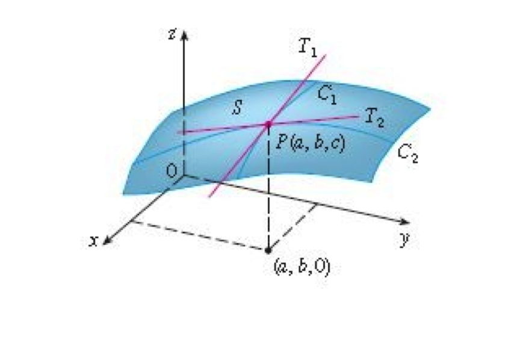
Y si tenemos más de dos variables la idea es la misma: si todas las variables menos una quedan constantes, lo que nos queda es una curva en una determinada dirección. La derivada parcial es la pendiente de esa curva en ese punto.
13.3.2 Definición formal
Después de explicar la idea general de lo que es una derivada parcial y ver su interpretacion geométrica en el caso de dos variables, definamos formalmente lo que es una derivada parcial. Es la misma idea que con la derivada ordinaria: el cálculo del límite cuando damos un “empujoncito” a la función. Solamente que en este caso lo empujamos según una de las variables, dejando el resto fijas.
Definición 13.1 Sea la función \(f(x_1, x_2, … , x_n)\). Definimos como derivada parcial de \(f\) respecto a \(x_i\) al límite
\[\frac{\partial f}{\partial x_i} = \lim_{h \to 0} \frac{f(x_1, …, x_i + h, …, x_n) - f(x_1, …, x_i, …, x_n)}{h}\]13.3.3 Derivadas parciales sucesivas
La derivada parcial de una función es otra función, que podemos volver a derivar. Así obtenemos derivadas parciales sucesivas. Al hacer la segunda derivada no es obligatorio volver a derivar respecto a la misma variable, sino que podemos cambiar. Esto quiere decir que en el caso de una función de dos variables \(f(x,y)\) podemos tener cuatro posibles derivadas segundas:
\[\frac{\partial}{\partial x}\left(\frac{\partial f}{\partial x}\right) = \frac{\partial^2 f}{\partial x^2} \qquad \frac{\partial}{\partial x}\left(\frac{\partial f}{\partial y}\right) = \frac{\partial^2 f}{\partial x \partial y}\] \[\frac{\partial}{\partial y}\left(\frac{\partial f}{\partial x}\right) = \frac{\partial^2 f}{\partial y \partial x} \qquad \frac{\partial}{\partial y}\left(\frac{\partial f}{\partial y}\right) = \frac{\partial^2 f}{\partial y^2}\]
Hay que tener cuidado. La expresión: \[\frac{\partial^2 f}{\partial x \partial y}\] quiere decir que primero derivamos respecto de \(y\) y después derivamos el resultado respecto de \(x\). Por suerte para los descuidados, se puede demostrar que para la mayoria de las funciones habituales (polinomios, racionales, trigonometricas, etc), da igual el orden, es decir \[\frac{\partial^2 f}{\partial x \partial y} = \frac{\partial^2 f}{\partial y \partial x}.\]
Veamos un ejemplo.
Ejemplo 13.4 Halla las cuatro derivadas segundas de la función \(f(x,y) = x\sqrt{y^2 + 1}\).
Empezamos por hallar las dos derivadas primeras: \[\begin{align} \frac{\partial f}{\partial x} &= \sqrt{y^2 + 1}\\ \frac{\partial f}{\partial y} &= \frac{xy}{\sqrt{y^2 + 1}} \end{align}\]
Y ahora calculamos las cuatro derivadas segundas \[\begin{align} \frac{\partial^2 f}{\partial x^2} = \frac{\partial}{\partial x}\left(\frac{\partial f}{\partial x}\right) &= \frac{\partial}{\partial x} \sqrt{y^2 + 1} = 0\\ \frac{\partial^2 f}{\partial y \partial x} = \frac{\partial}{\partial y}\left(\frac{\partial f}{\partial x}\right) &= \frac{\partial}{\partial y}\sqrt{y^2 + 1} = \frac{y}{\sqrt{y^2 + 1}}\\ \frac{\partial^2 f}{\partial x \partial y} = \frac{\partial}{\partial x}\left(\frac{\partial f}{\partial y}\right) &= \frac{\partial}{\partial x}\frac{xy}{\sqrt{y^2 + 1}} = \frac{y}{\sqrt{y^2 + 1}}\\ \frac{\partial^2 f}{\partial y^2} = \frac{\partial}{\partial y}\left(\frac{\partial f}{\partial y}\right) &= \frac{\partial}{\partial y}\frac{xy}{\sqrt{y^2 + 1}} = x\, \frac{ 1 - y^2}{\sqrt{(y^2 + 1)^3}} \end{align}\]
Vemos que en este caso se cumple que \[\frac{\partial^2 f}{\partial x \partial y} = \frac{\partial^2 f}{\partial y \partial x} = \frac{y}{\sqrt{y^2 + 1}}\]13.4 Derivadas direccionales
Hemos visto que las derivadas parciales de \(f\) respecto a \(x_i\) miden la pendiente de la función si seguimos la dirección del eje \(x_i\). Pero eso es un poco restrictivo: nos puede interesar calcular la pendiente respecto a alguna otra dirección. Vamos a ver cómo podemos calcular la pendiente de la función en cualquier dirección que nos interese. A esto se llama una derivada direccional.
Lo primero que debemos hacer es definir la dirección que nos interesa. Sigamos con nuestro ejemplo de la montaña. Digamos que nos interesa la dirección Sudeste-Noroeste, una diagonal. Un vector que va en esa dirección es el vector \((-1, 1)\) 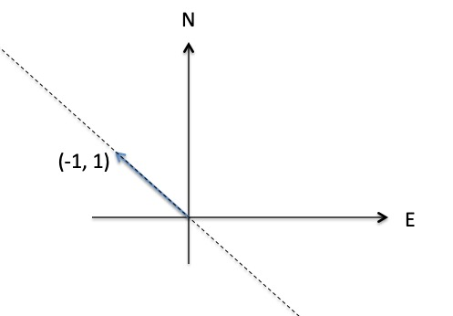
Nos va interesar tener un vector de longitud unidad y este no lo es: es de longitud \(\sqrt{2}\). Simplemente dividimos cada componente por la longitud del vector y tenemos nuestro vector direccional unitario \(\vec{u} = (u_x, u_y) = \left(\frac{-1}{\sqrt{2}}, \frac{1}{\sqrt{2}}\right)\). Para tener la derivada direccional según \(\vec{u}\) hemos de dar el “empujoncito” a nuestra función en esta dirección. Vamos a movernos una pequeña distancia \(h\) según esta dirección. En el sistema de coordenadas, quiere decir que nos hemos movido \(\frac{-1}{\sqrt{2}} \,h = u_x h\) según el eje Este-Oeste (como es negativo, hacia el Oeste) , y \(\frac{1}{\sqrt{2}} \,h = u_y h\) según el eje Norte-Sur (como es positivo, hacia el Norte). No es difícil ver que el límite que hemos de resolver para calcular la pendiente es \[\lim_{h \to 0} \frac{f(x+ u_x h, y + u_y h) - f(x, y)}{h}.\]
Calcular este límite puede parecer muy complicado, pero se puede demostrar que es simplemente \[\frac{\partial f}{\partial x}u_x + \frac{\partial f}{\partial y}u_y.\]
Esto, en nuestro ejemplo, se convierte en \[\frac{\partial f}{\partial x}\frac{-1}{\sqrt{2}} + \frac{\partial f}{\partial y}\frac{1}{\sqrt{2}}.\]
Definición 13.2 Definimos derivada direccional de la funcion \(f(x_1, …,x_n)\) según el vector unitario \(\vec{u} = (u_x, u_y)\) y lo escribimos como \(D_\vec{u}f(x_1, …,x_n)\), como el límite \[\lim_{h \to 0}\frac{f(x_1 + u_{x_1} h + \cdots + x_n + u_{x_n} h) - f(x_1, …,x_n)}{h}\]
Esta derivada direccional se puede calcular a partir de las derivadas parciales:
\[D_\vec{u}f(x_1, …,x_n) = \frac{\partial f}{\partial x_1}u_{x_1} + \cdots +\frac{\partial f}{\partial x_n}u_{x_n}\]Ejemplo 13.5 Sea \(f(x,y) = \sqrt{36 - x^2 - 3y^2}\). Calcule sus derivadas parciales y su derivada direccional según la dirección dada por el vector \(\vec{v} = (1, 3)\). Evalúa las derivadas en el punto \(P = (-2,1)\).
Empecemos calculando las derivadas parciales: \[\begin{align} \frac{\partial f}{\partial x} &= \frac{-x}{\sqrt{36 - x^2 - 3y^2}}\\ \frac{\partial f}{\partial y} &= \frac{-3y}{\sqrt{36 - x^2 - 3y^2}} \end{align}\] El vector que nos han dado no es unitario. Su módulo es \(\sqrt{10}\). El vector unitario en la misma dirección es pues \(\vec{u} = \left(\frac{1}{\sqrt{10}}, \frac{3}{\sqrt{10}}\right)\). Ahora es inmediato calcular la derivada direccional: \[D_\vec{u}f(x, y) = \frac{-x}{\sqrt{10\,(36 - x^2 - 3y^2)}} - \frac{-9y}{\sqrt{10\,(36 - x^2 - 3y^2)}} = -\frac{x + 9y}{\sqrt{10\,(36 - x^2 - 3y^2)}}.\]
Evaluemos estas tres derivadas en el punto \(P = (-2, 1)\): \[\begin{align} \frac{\partial f}{\partial x} &= \frac{2}{\sqrt{36 - 4 - 3}} = 0.371\\ \frac{\partial f}{\partial y} &= \frac{-3}{\sqrt{36 - 4 - 3}} = -0.557\\ D_\vec{u}f(x, y) &= -\frac{-2 + 9}{\sqrt{10\,(36 - 4 - 3)}} = -0.411 \end{align}\]13.5 Gradiente
Con las derivadas parciales podemos saber cuánto cambia el valor de algo en las direcciones de los ejes. Con las derivadas direccionales podemos saber cuánto cambia el valor en cualquier dirección que queramos. Pero a menudo lo que queremos saber es cuánto es el máximo cambio y en qué dirección se produce. En nuestro ejemplo de la montaña, queremos saber cuál es la pendiente máxima y en qué dirección es. El gradiente nos va a dar esta información. Como el gradiente nos da tanto la magnitud como la dirección, va a ser un vector.
Se puede demostrar que el gradiente nos da en cada punto la dirección del máximo cambio de la función en ese punto y que el módulo del vector gradiente nos da el valor de la máxima pendiente en el punto.
El gradiente es muy útil. Por ejemplo, si tenemos una función con las temperaturas en un espacio, el gradiente en un punto nos indica hacia dónde está el máximo cambio de temperatura, y por lo tanto, hacia dónde va a fluir el calor. Dibuando los gradientes nos podemos hacer una idea del flujo del calor en ese espacio:
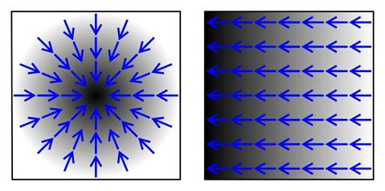
En el gráfico de la izquierda hay un foco de alta temperatura en el centro y la temperatura asciende alrededor de este foco (y el calor fluye alejandose del foco), mientras que en el de la derecha la temperatura crece uniformemente hacia la izquierda, como si tuviéramos una pared en el lado izquierdo a temperatura uniforme. Notad que en este caso (y muchos otros) el flujo va en sentido contrario al gradiente: el gradiente va de valores menores a mayores de temperatura, mientras que el calor va desde lugares calientes a lugares fríos.
Por eso a veces se revierten las flechas, como en el gráfico siguiente:
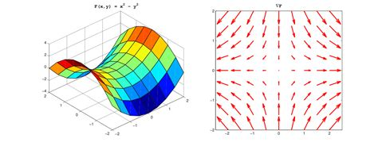
Si esto fuera una superficie, las flechas (invertidas) del gradiente nos dan una indicación de hacia dónde rodaría una pelota que se dejara en un punto. El tamaño de la flecha nos indica también la aceleración que tendría.
Hay una relación interesante entre el gradiente y las curvas de nivel: el gradiente es siempre perpendicular a las curvas de nivel. Eso es lógico: si el vector gradiente no fuera perpendicular a la curva de nivel, podríamos descomponerlo en dos vectores: uno paralelo a la curva y otro perpendicular. Pero si tiene una componente paralela, quiere decir que hay un cambio de nivel en la curva, lo cual no puede ser: es una curva de nivel constante. Luego el gradiente debe ser perpendicular a la curva de nivel.
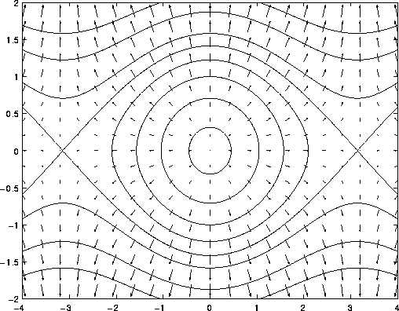
13.5.1 Gradientes y derivadas direccionales
Vimos en el apartado 13.4 cómo calcular derivadas direccionales. Una vez se tiene el gradiente, calcular una derivada direccional según el vector unitario \(\vec{u}\) es simplemente un producto escalar: \[D_\vec{u} f = \vec{\nabla}f \cdot \vec{u}.\] Efectivamente \[\left(\frac{\partial f}{\partial x_1}, \frac{\partial f}{\partial x_2}, … , \frac{\partial f}{\partial x_n}\right) \cdot (u_{x_1}, u_{x_2}…, u_{x_n}) = \frac{\partial f}{\partial x_1}u_{x_1} + \frac{\partial f}{\partial x_2}u_{x_2} + \cdots \frac{\partial f}{\partial x_n}u_{x_n} = D_\vec{u} f.\]
13.5.2 Máximos, mínimos, puntos de silla
Con las derivadas ordinarias vimos que si el valor de la primera derivada es 0 podemos tener un máximo, un mínimo o un punto de inflexión de pendiente horizontal. En el caso de funciones de varias variables, pasa algo parecido.
Vamos a centrarnos en el caso de dos variables, \(f(x,y)\). Si ambas derivadas parciales son 0 podemos tener un máximo:
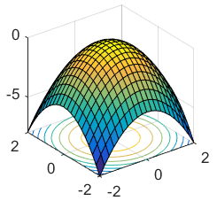
o un mínimo
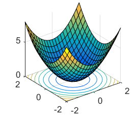
o algo que no es ni un máximo ni un mínimo y que se llam un punto de silla:
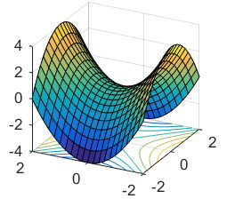
En el caso de las derivadas ordinarias necesitábamos las derivadas segundas para saber si nos encontrábamos ante un máximo, un mínimo o un punto de inflexión. Aquí pasa algo parecido: necesitamos las cuatro derivadas segundas para poder diferenciar entre los tres casos. No es muy difícil, pero no lo vamos a ver aquí.
13.6 Integrales múltiples
Como podemos derivar una función de varias variables, también las podemos integrar. Y la idea general es la misma: lo hacemos respecto de una variable cada vez, manteniendo las demás constantes. A esto se llama una integral múltiple. Por ejemplo, si tenemos la función \(f(x,y) = \frac{3 \sin(y)}{x}\), podríamos resolver la integral doble \[\int_0^π \int_1^e \frac{3 \sin(y)}{x} \, dx \, dy.\] Para dejar claro lo que esto significa, vamos a poner paréntesis: \[\int_0^π \left(\int_1^e \frac{3 \sin(y)}{x} \, dx\right) \, dy.\] Es decir, primero vamos a integrar la función con respecto a \(x\), y haremos variar \(x\) entre 1 y \(e\), y al resultado lo integraremos respecto a \(y\), haciendo variar \(y\) entre 0 y π.
Hagamos la primera integral. Como es respecto a \(x\), entonces \(3 \sin(y)\) es constante y lo podemos sacar fuera y nos queda: \[\int_0^π \left(3 \sin(y) \int_1^e \frac{1}{x} \, dx\right) \, dy.\] Esta integral es inmediata: \[\int_0^π \left(3 \sin(y) \left.\log(x)\right|_1^e\right) \, dy.\] Evaluamos: \[\int_0^π \left(3 \sin(y) (1 - 0)\right) \, dy = \int_0^π 3 \sin(y) \, dy.\] Hecha esta primera integral, pasamos a la segunda, que también es inmediata: \[\left.-\cos(y)\right|_0^π = -cos(π) - (- cos(0)) = 1 +1 = 2.\]
De la misma manera que el cálculo de derivadas parciales no es en el fondo diferente al cálculo de derivadas simples, calcular integrales múltiples no es en el fondo diferente a calcular integrales simples.
13.6.1 Interpretación geométrica de la integral doble
Vimos que la integral simple \(\int_a^b f(x)\, dx\) es el área bajo la curva de la función entre \(a\) y \(b\). Una integral doble extiende esta misma idea a una dimensión más: la integral \[\int_{a_y}^{b_y} \int_{a_x}^{b_x} f(x, y) \, dx \, dy\] es el volumen bajo la superficie de \(f(x, y)\) dentro del rectángulo: 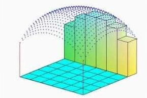
Para integrales triples o con más variables, la idea es la misma, aunque ya no podemos hablar de superficies o volúmenes: si tenemos una función con \(n\) variables, la integral nos calcula el “hipervolumen” de dimensión \(n+1\) bajo la función.
13.6.2 Primitivas de integrales múltiples
Aunque en el ejemplo de arriba hemos evaluado la primera integral antes de continuar con la segunda, no es necesario. Lo que generalmente se hace es calcular la primitiva de la integral múltiple y después evaluar:
\[\int_0^π \int_1^e \frac{3 \sin(y)}{x} \, dx \, dy = \left.\left.- 3\cos(y) \log(x)\right|_1^e \right|_0^π = \left.- 3\cos(y) (1 - 0) \right|_0^π = -\cos(0) - (- \cos(π)) = 2\]
Lo que hay que tener cuidado es evaluar en el orden correcto.
13.6.3 Orden de integración
Hemos visto que hemos de integrar desde dentro hacia fuera. Si tenemos \[\int_{z_a}^{z_b}\int_{y_a}^{y_b}\int_{x_a}^{x_b} f(x, y, z) \, dx\, dy \, dz\] hemos primero de integrar respecto de \(x\), después respecto de \(y\) y finalmente respecto de \(z\). Pero se puede demostrar que en ciertas circunstancias se puede cambiar el orden de integración sin cambiar el resultado. Si se cumplen las circunstancias \[\int_{z_a}^{z_b}\int_{y_a}^{y_b}\int_{x_a}^{x_b} f(x, y, z) \, dx\, dy \, dz =\int_{y_a}^{y_b}\int_{z_a}^{z_b}\int_{x_a}^{x_b} f(x, y, z) \, dx\, dz \, dy\] o cualquier otra combinación que hagamos.
Nótese que si cambiamos el orden de los \(dx\), \(dy\) y \(dz\) del final de la integral, hemos de cambiar también el orden de los límites de integración al principio: si cambio el orden de integración he de cambiar también el orden de evaluación.
¿Y cuáles son las circunstancias que permiten el cambio? No entraremos en detalle, pero las funciones habituales (polinomios, exponenciales, trigonomñetricas, etc) las cumplen. Casi siempre lo podremos hacer.
13.6.4 Ejemplos
Las integrales múltiples son muy útiles para calcular superficies y volúmenes de figuras geométricas. Sabemos que la superficie del círculo de radio \(R\) es \(S = πR^2\). Vamos a usar una integral doble para deducirlo.
Ejemplo 13.7 Calcula con integrales la superfice de un círculo de radio R.
Para calcular la superficie sumaremos pequños rectángulos de lados \(dx\) y \(dy\):
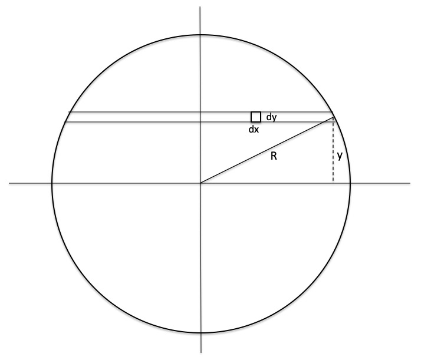
Empecemos por calcular la superficie de una tira horizontal que está a altura \(y\). Esto será la suma de las áreas de los rectángulos: \[\int_a^b dx dy\] Hemos de determinar los extremos de integración, que dependen del valor de \(y\). Por Pitágoras es fácil ver que \(a = -\sqrt{R^2 - y^2}\) y que \(b = \sqrt{R^2 - y^2}\). Por lo tanto la integral es \[\int_{-\sqrt{R^2 - y^2}}^\sqrt{R^2 - y^2} dx dy.\] Ahora hemos de sumar todas las tiras, desde el extremo inferior del círculo (\(y = -R\)) al extremo superior (\(y = R\)). Y así tenemos nuestra integral doble: \[\int_{-R}^R \int_{-\sqrt{R^2 - y^2}}^\sqrt{R^2 - y^2} dx\, dy.\]
La primera integral es inmediata y nos queda \[\int_{-R}^R 2\sqrt{R^2 - y^2} dy.\] Sacamos la \(R\) de la raíz y hacemos el cambio de variable \(u = \frac{y}{R}\), lo que implica que \(dy = R du\). Con el cambio de variable cambiamos los extremos de integración. Es fácil ver que si \(y = -R\) entonces \(u = -1\) y que si \(y = R\) entonces \(u = 1\). Nos queda \[2R\int_{-1}^1 \sqrt{1 - u^2} \, R\, du = 2R^2\int_{-1}^1 \sqrt{1 - u^2} \, du\]
La integral \(\int \sqrt{1 - u^2} \, du\), que parece inocente, no es tan fácil. Primero hemos de hacer al cambio de variable \(u = \sin(v)\), lo que implica que \(du = \cos(v) dv\). Como \(1 - \sin^2 (v) = \cos^2(v)\) (para esto hacemos el cambio), nos queda: \[\int \sqrt{1 - u^2} \, du = \int \cos^2(v) \, dv.\] Ahora hemos de aplicar la igualdad trigonométrica \(\cos^2(v) = \frac{1}{2}(\cos(2v) + 1)\). Y a partir de aquí ya sale. La solución es \[2R^2 \left(\left. \frac{1}{2}(u \sqrt{1-u^2} + \arcsin(u))\right|_{-1}^{1} \right)\] Y el resultado de esto es \(πR^2\).
Parece una forma muy complicada de calcular una superficie. Eso es porque hemos usado coordenadas rectangulares aplicadas a un círculo. El cálculo de la integral se puede simplificar mucho si escogemos mejor las variables. Usemos coordenadas polares.
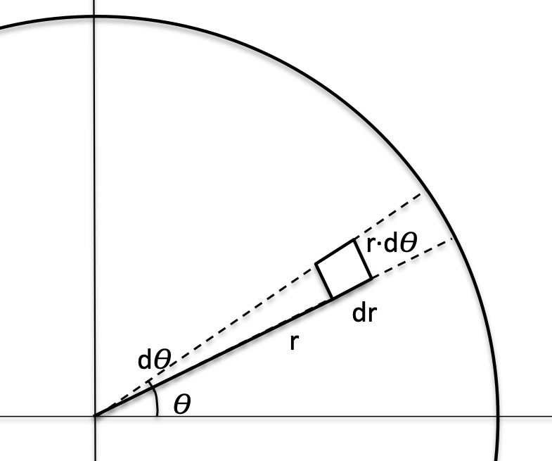
Nuestras coordenadas son ahora \(r\), la distancia al centro, y \(\theta\), el ángulo. Vamos a ir sumando pequeños sectores circulares. Como son muy pequeños, los podemos considerar rectángulos y su superficie será \(dr\cdot rd\theta\). Es \(rd\theta\) y no sólo \(d\theta\), pues \(d\theta\) es un ángulo y queremos una longitud: \(rd\theta\) es una longitud.
Tenemos que sumar todos estos rectángulos, desde \(r = 0\) a \(r = R\), esto nos da una “cuñita”, y después debemos barrer la cuña por todo el círculo, es decir , desde \(\theta = 0\) a \(\theta = 2π\). La integral a resolver es pues \[\int_0^{2π}\int_0^R r\,dr \,d\theta\] y esta integral es de resolución inmediata: \[\int_0^{2π}\int_0^R r\,dr \,d\theta = \left.\left.\frac{r^2}{2} \theta\right|_{r=0}^{r = R}\right|_{\theta = 0}^{\theta = 2π} = πR^2\]
Vamos a resolver otro problema, esta vez aplicando coordenadas rectangulares a un rectángulo.
Ejemplo 13.8 Tenemos una plancha rectangular de un material que no tiene densidad constante: es más pesada a la derecha y arriba que a la izquierda y abajo. Suponiendo el origen de coordenadas en el ángulo inferior izquierdo de la plancha, la densidad \(\sigma\) en el punto de coordenadas \((x, y)\) viene dada por la expresión \(\sigma(x, y) = 1 + 0.3 x + 0.7 y\). La plancha tiene anchura \(a\) y altura \(b\). ¿Cuál es su masa?
Para calcular la masa de la plancha, hemos de sumar la masa de todos los pequeños rectángulos de tamaño \(dx\), \(dy\). Como los rectángulos son muy pequeños, podemos considerar que en ellos la densidad es constante. Si el rectángulo está en el punto \((x, y)\), la masa de este pequeño rectángulo será \(\sigma\, dx\, dy = (1 + 0.3 x + 0.7 y) \, dx\, dy\). Sumamos las masas de todos estos rectángulos:
\[\int_0^b\int_0^a (1 + 0.3 x + 0.7 y) \, dx\, dy = \left.\left. xy + 0.7x\frac{y^2}{2} + 0.3\frac{x^2}{2}y \right|_{x=0}^{x = a}\right|_{y = 0}^{y = b} = ab + 0.35 ab^2 + 0.15a^2b\]Acabemos este apartado calculando un volumen con una integral triple:
Ejemplo 13.9 Calcula el volumen de un cono de radio \(R\) y altura \(h\).
Dividiremos el cono en una serie de discos apilados verticalmente. Como los discos son círculos, usaremos coordenadas polares, \(r\) y \(\theta\), como en el ejemplo del círculo, y para la altura usaremos una variable que llamaremos \(z\).
Dividimos el cono en pequeños cubos de lados \(dr\), \(rd\theta\) y \(dz\). El volumen de un disco se calcula casi igual que el del círculo, ya hecho:
\[\int_0^{2π}\int_0^? r\,dr \,d\theta\, dz\]
He puesto un interrogante en el límite superior de la integral en \(r\), porque el radio del disco va a depender de a qué altura esté: en la base va a ser \(R\), pero después va a disminuir cuánto más alto esté. Es decir, va a depender de \(z\). No es difícil deducir que el radio de un disco a altura \(z\) es \(R - \frac{R}{h}z\). Entonces esta integral queda: \[\int_0^{2π}\int_0^{R - \frac{R}{h}z} r\,dr \,d\theta\, dz.\] Este es el volumen de un disco que está a altura \(z\). Ahora hay que sumar todos los discos desde \(z=0\) a \(z = h\): \[\int_0^h\int_0^{2π}\int_0^{R - \frac{R}{h}z} r\,dr \,d\theta\, dz.\] Las dos primeras integrales son fáciles y ya las hemos hecho. Nos queda la tercera: \[π\int_0^h \left(R - \frac{R}{h}z\right)^2dz\] Desarrollando: \[π\int_0^h \left(R^2 + \frac{R^2}{h^2}z^2 - 2\frac{R^2}{h}z\right)dz\] Es un polinomio, por lo tanto, inmediata: \[π\left.\left(R^2z + \frac{R^2}{h^2}\frac{z^3}{3} - 2\frac{R^2}{h}\frac{z^2}{2}\right)\right|_0^h.\] Para \(z=0\) es 0, luego queda: \[π\left(R^2h + \frac{R^2}{h^2}\frac{h^3}{3} - \frac{R^2}{h}h^2\right) = π\left(R^2h + \frac{R^2 h}{3} - R^2h\right).\] Y nos queda la conocida fórmula del volumen de uncono: \[V = \frac{1}{3}πR^2 h\]Para terminar, calculemos la posición del centro de masas de la plancha de densidad no uniforme del ejemplo que hemos visto antes. La posición del centro de masas será un vector, pues tiene dos componentes. Esto quiere decir que tenemos dos variables de entrada y un vector de salida. Luego tenemos una función vectorial multivariable. Veamos qué hacer con estas fuciones.
13.7 Funciones vectoriales multivariable
Cuando comentamos las funciones vectoriales de una variable vimos que era como tener un función real de una variable por cada componente del vector: no había ningún cálculo ni concepto nuevo, sino que había que repetir lo mismo \(m\) veces. Con las funciones vectoriales multivariable pasa lo mismo: tenemos \(m\) componentes, cada una de ellas, una función de \(n\) variables. Repetimos de una función de \(n\) variables una vez or componente, esto es, \(m\) veces.
No vamos a entrar más en ello. Simplemente haremos un ejemplo.
La expresión para encontrar el centro de masas de un objeto continuo es \[\vec{r}_{CM} = \frac{1}{M}\int\vec{r}\,dm\]
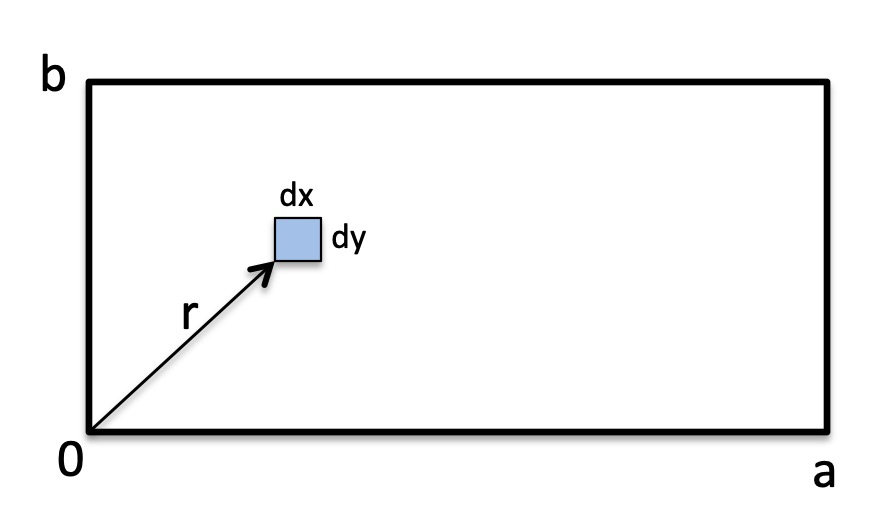
El vector \(\vec{r} = (x\,\vec{i} + y\,\vec{j})\) es el vector que localiza \(dm\). Este diferencial es un rectángulo de lados \(dx\) y \(dy\) y su densidad la podemos considerar constante y es \(1 + 0.3 x + 0.7 y\). Sabemos la masa de la plancha, pues la hemos calculado ya, \(M = ab + 0.35 ab^2 + 0.15a^2b\). La expresión queda: \[\vec{r}_{CM} = \frac{1}{M}\int_0^b\int_0^a(x\,\vec{i} + y\,\vec{j})(1 + 0.3 x + 0.7 y)\,dx\,dy.\] Esta integral se descompone en 2: \[\frac{1}{M}\left(\left(\int_0^b\int_0^a x(1 + 0.3 x + 0.7 y)\,dx\,dy\right) \vec{i} + \left(\int_0^b\int_0^a y(1 + 0.3 x + 0.7 y)\,dx\,dy\right) \vec{j}\right).\] Son integrales fáciles y no las haremos. El resultado es \[\vec{r}_{CM} = \frac{1}{M}\left(\frac{a^2b}{2} + 0.1a^3b + 0.175a^2b^2\right)\vec{i} + \frac{1}{M}\left(\frac{ab^2}{2} + 0.075a^2b^2 + \frac{0.7}{3}ab^3\right)\vec{j}\]